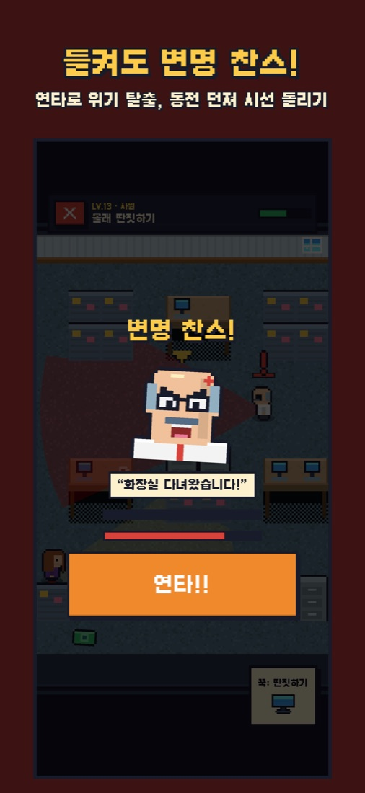
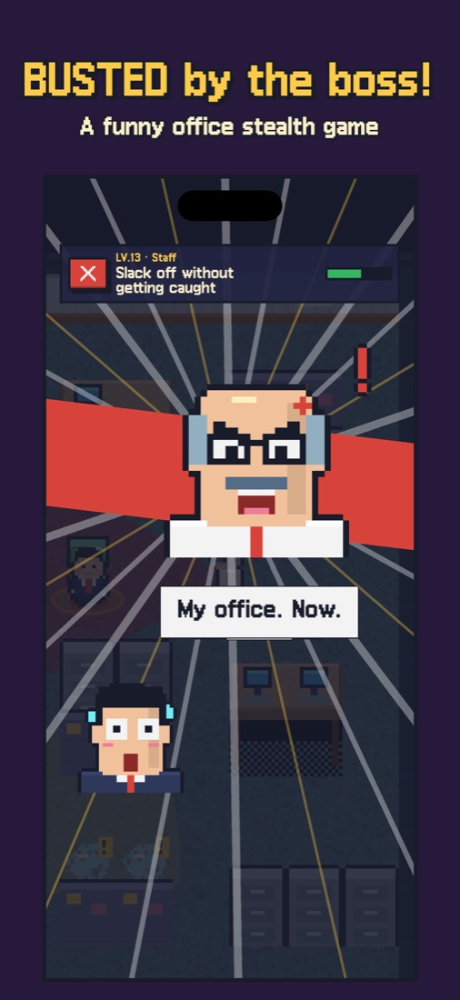
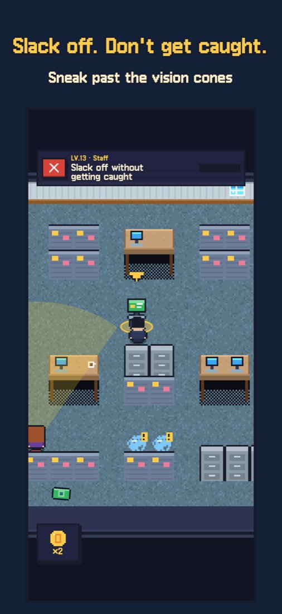
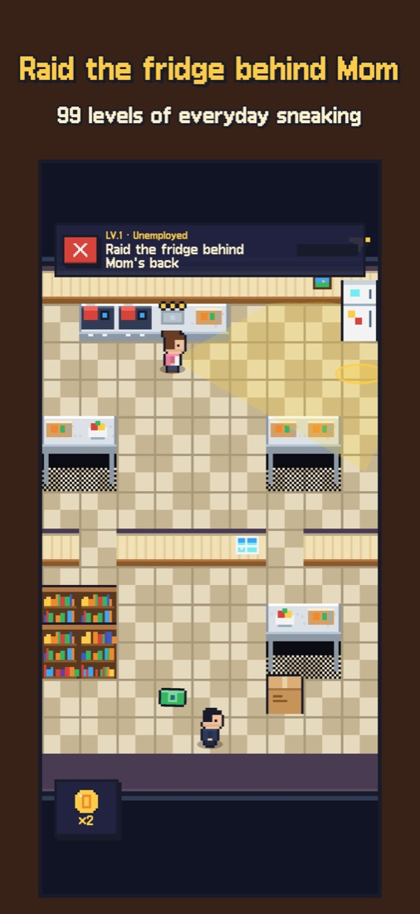
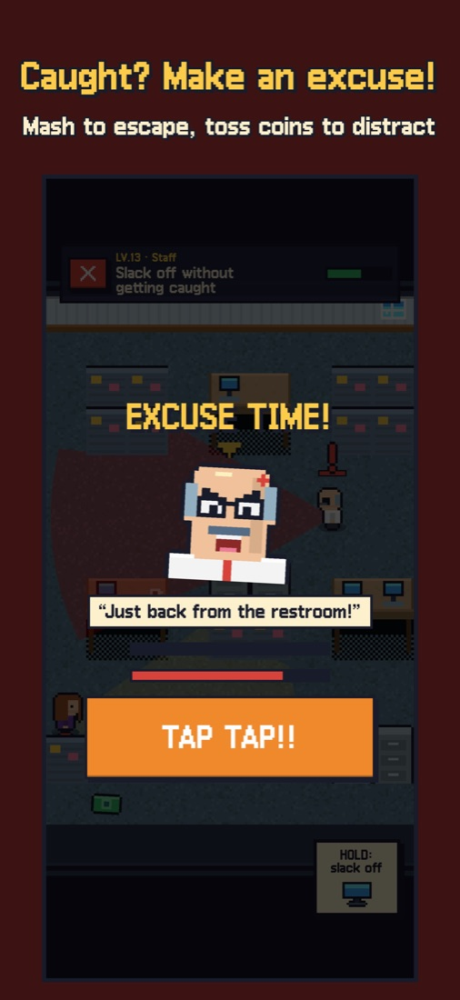

칼퇴 대작전Sneaky Salaryman
Sneaky Salaryman칼퇴 대작전
들키면 끝! 직장인 잠입 퍼즐Don't get caught by the boss.







지원
엄마, 부장님, 수다쟁이 동료, CCTV, 그리고 사장님까지 — 눈에서 나오는 레이더를 피해 냉장고 털기부터 회식 탈출, 사장님 몰래 퇴근까지 99단계를 돌파하세요.
문의
버그 제보 시 기기 모델, iOS 버전, 레벨 번호를 함께 보내 주시면 빠르게 확인할 수 있습니다.
자주 묻는 질문
- 진행 기록은 어디에 저장되나요? 기기에 저장되며, iCloud를 사용 중이면 본인 iCloud에도 백업되어 새 기기에서 이어서 할 수 있습니다.
- '칼퇴 시간' 알림을 끄고 싶어요. iOS 설정 → 알림 → 칼퇴 대작전에서 끌 수 있습니다.
- 소리가 안 나요. 게임 설정의 효과음/배경음악이 켜져 있는지, 기기 볼륨을 확인해 주세요.
- 들킨 장면을 공유하려면? 결과 화면의 [공유하기]로 이미지 카드를 보낼 수 있습니다. 영상으로 남기고 싶다면 iPhone 제어 센터의 '화면 기록'을 이용하세요.
- 결제나 광고가 있나요? 없습니다. 의상과 책상 아이템은 모두 게임 속 월급으로 얻습니다.
Support
Sneak past Mom, your boss, chatty coworkers, CCTV — and the CEO — across 99 levels of everyday sneaking, from raiding the fridge to escaping the team dinner.
Contact
For bug reports, please include your device model, iOS version and the level number.
FAQ
- Where is my progress saved? On your device, and in your own iCloud if you use it, so you can continue on a new device.
- How do I turn off the clock-out reminder? iOS Settings → Notifications → Sneaky Salaryman.
- No sound? Check Sound / Music in the game's settings and your device volume.
- How do I share a caught moment? Tap Share on the result card to send an image card. For video, use Screen Recording in iPhone's Control Center.
- Any purchases or ads? None. Every outfit and desk item is earned with in-game salary.